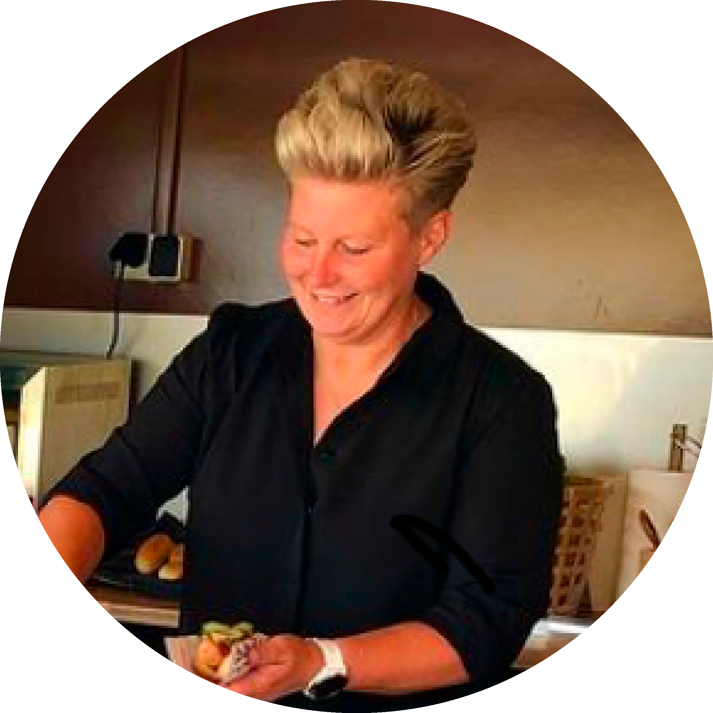

Bøfsandwich
Bøfsandwich er en sand klassiker!
Vores bøfsandwich er lavet med kød fra lokale slagtere, som ligger i den lækreste brune sovs.
Sandwichen fyldes med bløde-, ristede- og rå løg. Ved siden af serveres både syltede rødbeder og agurker.
Serveres hele året rundt, og er altid et hit hos vores kunder.
Vores råvarer er primært lokale fra Skive, hvor Taffelvognen holder til. Vi går op i god kvalitet, og holder af økologi.
Kokken bag
Lene Ellebæk
 BESTIL MENU
BESTIL MENU